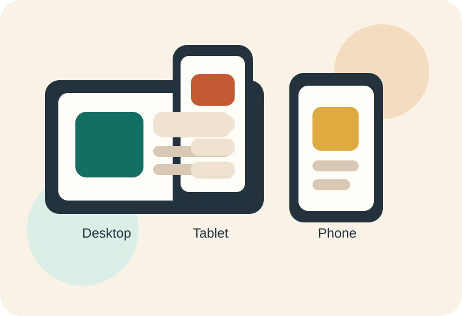

Responsive design helps content adapt instead of break.
Responsive web design is about building pages that adjust to the user's screen size,
device capabilities, and sometimes input method. The goal is not to make a separate site for every
device, but to build one site that still works well across different screens.
Main point: fluid layouts, flexible images, and smart breakpoints help developers support
a lot of devices without relying on fixed pixel widths.

The same content can reorganize for desktop, tablet, and mobile screens when the layout is responsive.
Viewport basics
Responsive pages start with the viewport meta tag so mobile browsers render content according to the
device width rather than a desktop-sized assumption.
Flexible layout systems
CSS Grid and Flexbox help components grow, shrink, and wrap naturally as space changes.
This makes layouts more reliable than fixed-width positioning.
Content first
A strong responsive design keeps text readable, buttons reachable, and images within the screen without
forcing users to zoom or scroll sideways.
Responsive Design Practices
Use flexible widths like percentages, fr units, and minmax().
Set images to scale with the layout using max-width: 100%.
Use media queries only when the content needs help, not for every device model.
Test tap targets, line length, spacing, and navigation on smaller screens.
Organize content so the most important information appears early on narrow layouts.
MDN explains that HTML is naturally flexible, but CSS is what really helps control readability and layout as screens
grow or shrink. web.dev builds on that by recommending a device-agnostic approach: set the viewport,
keep content inside the screen, and use flexible layout methods like Grid and Flexbox.
Source focus: MDN Responsive Web Design guide and web.dev Responsive Web Design Basics.
Mobile-First Thinking
Starting with a narrow layout helps developers focus on the most important content first. From there,
larger breakpoints can add columns, spacing, and supporting visuals without getting in the way of the main message.
Responsive Testing Notes
Resize the browser slowly instead of checking only a few preset widths.
Watch whether navigation wraps cleanly and stays easy to tap.
Confirm tables, cards, and code blocks still fit smaller screens.
Check line length so paragraphs remain readable on wide displays.